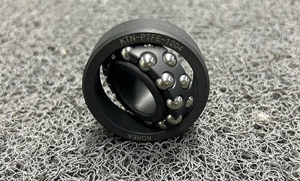
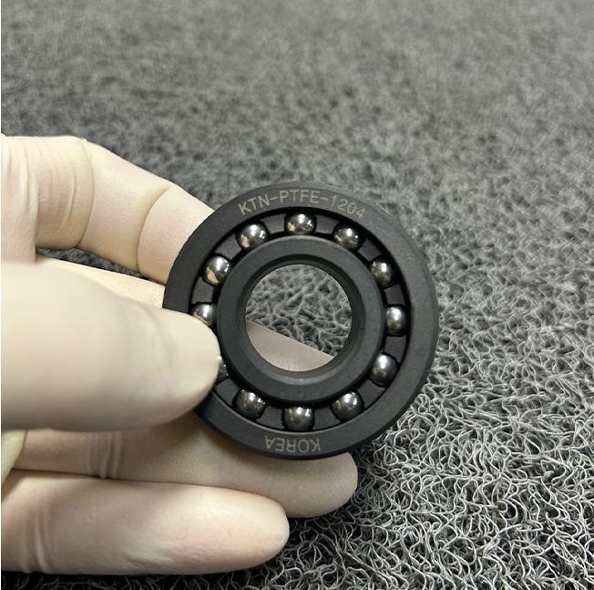
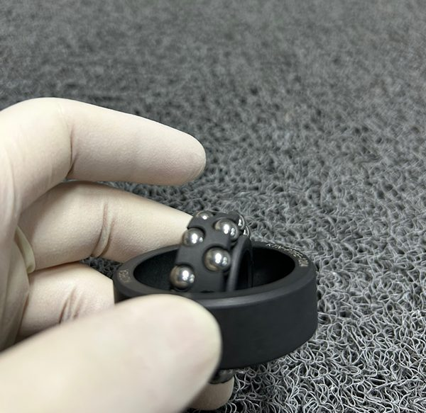
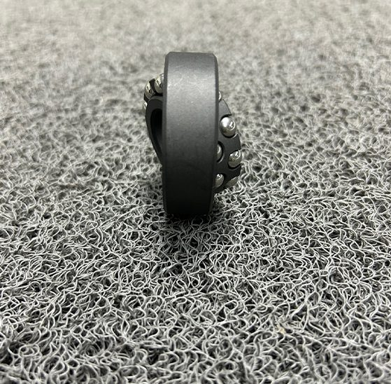

PTFE 볼베어링 핵심 스펙 3가지
PTFE(폴리테트라플루오로에틸렌), 흔히 테프론이라 부르는 이 소재는 베어링 업계에서 "까다로운 환경의 해결사"로 통합니다. 세 가지 숫자가 이유를 설명합니다.

이유 1. 자기윤활 — 윤활유 없이 돌아갑니다
일반 금속 베어링은 마찰을 줄이기 위해 정기적으로 오일이나 그리스를 주입해야 합니다. 이 과정이 번거롭고, 윤활제가 누유되면 주변 부품이나 제품을 오염시킬 수 있습니다.
PTFE는 마찰 계수가 고체 소재 중 가장 낮은 수준(0.04 이하)으로, 소재 자체가 윤활 역할을 합니다. 별도 급지 없이 장기간 운용이 가능하기 때문에 유지보수 비용과 다운타임이 모두 줄어듭니다.
클린룸·식품·제약 라인에서 PTFE가 선택받는 이유
윤활유 없이 작동한다는 것은 단순히 편리함의 문제가 아닙니다.
윤활제 오염이 허용되지 않는 클린룸, 의약품·식품 제조 라인에서는
무급지 베어링이 규정 준수의 조건이 됩니다.
PTFE 볼베어링이 이 환경에서 사실상 표준으로 자리잡은 이유입니다.
이유 2. 내화학성 — 강산·강알칼리·유기용매에 부식이 없습니다
금속 베어링이 화학 환경에서 가장 먼저 무너지는 건 부식입니다. 산화, 녹, 이물질 발생 — 이것이 베어링 교체 주기를 짧게 만드는 주원인입니다.
PTFE는 강산, 강알칼리, 유기용매 등 대부분의 화학물질에 반응하지 않습니다. 화학 처리 공정, 반도체 에칭 라인, 세정 장비처럼 부식 환경이 일상인 곳에서 교체 주기를 수배 이상 늘릴 수 있습니다.
| 항목 | 일반 금속 베어링 | PTFE 볼베어링 |
|---|---|---|
| 강산 환경 | 부식·산화 발생 | 저항성 우수 |
| 강알칼리 환경 | 표면 손상 | 저항성 우수 |
| 유기용매 | 팽윤·변형 가능 | 거의 영향 없음 |
| 이물질 발생 | 부식 이물질 발생 | 없음 |
| 급지 필요 | 주기적 필요 | 불필요 (자기윤활) |
이유 3. -200°C에서 260°C까지 — 온도 때문에 베어링 못 쓴다는 말이 없어집니다
일반 플라스틱 소재는 고온에서 변형되거나 저온에서 취성 파괴가 발생합니다. PTFE는 다릅니다.


PTFE 가공이 어렵다는 말, 사실입니다 — KTN이 20년간 해결한 3가지
PTFE는 특성이 우수한 만큼 가공 난이도도 높습니다. 가공 업체를 선택할 때 반드시 확인해야 할 3가지입니다.

솔직히 말씀드리겠습니다.
PTFE 볼베어링이 모든 라인에 필요한 건 아닙니다.
화학약품 노출이 없고, 윤활유 급지가 가능하고, 온도 범위가 일반적이라면
표준 금속 베어링이 더 경제적입니다.
KTN의 PTFE 볼베어링은 무급지가 필요하거나, 화학 환경에 노출되거나,
극한 온도 조건에서 베어링이 버텨줘야 하는 분을 위해 만들었습니다.
그런 라인이라면, 소재 하나 바꾸는 것이 유지보수 비용을 절반으로 줄이는 시작이 됩니다.